Acute Coronary Syndrome & Stroke
講師提示｜詳細說明與公版核對
40分鐘ACS、40分鐘Stroke、10分鐘各章臨床回顧與提問。不是技能實作站。
病例：胸悶45分鐘，現在怎麼做？
講師提示｜詳細說明與公版核對
先請學員回答：12導程心電圖。同步監測、建立靜脈管路、快速評估危險徵象；不可等待Troponin才安排心電圖。
ACS不是單純的「血管變窄」
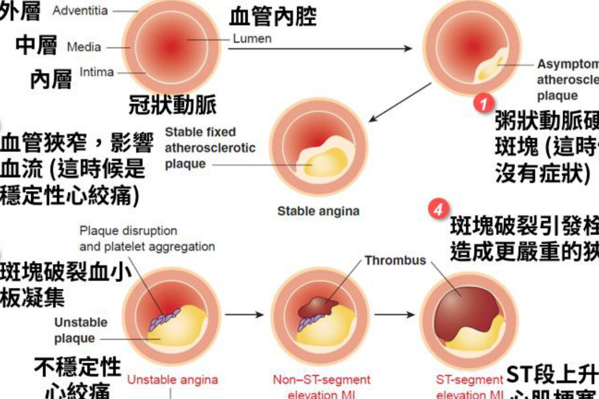
講師提示｜詳細說明與公版核對
原公版第7頁呈現斑塊進展；強調ACS是動態血栓事件，不應只用狹窄百分比理解。
從血管阻塞到心肌壞死
講師提示｜詳細說明與公版核對
原公版第9頁有固定分鐘數與90%壞死敘述，臨床進程存在個體差異；本頁避免將時間當作絕對界線。
三種ACS臨床表型
講師提示｜詳細說明與公版核對
心電圖不能單獨判斷全部ACS類型，需合併症狀、動態ECG及Troponin。
胸痛不一定是「痛」
講師提示｜詳細說明與公版核對
詢問發作時間、誘發與緩解、伴隨症狀，並同步排除主動脈剝離、肺栓塞等危急鑑別診斷。
12導程心電圖：先看位置
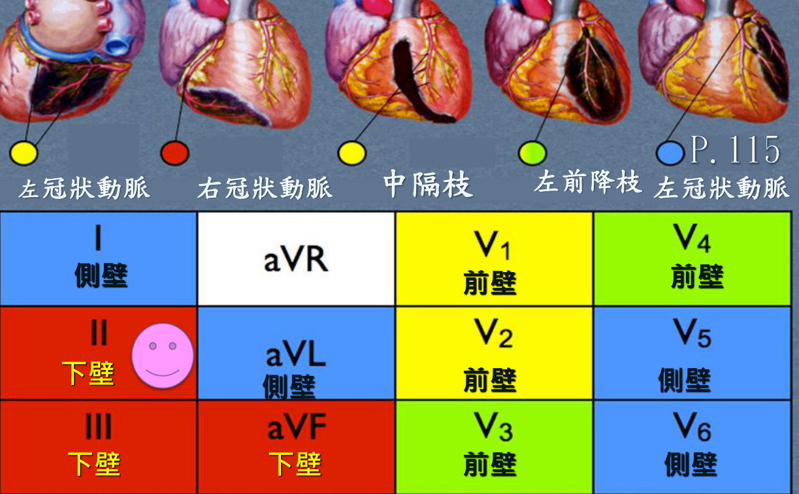
講師提示｜詳細說明與公版核對
原公版第19頁圖表有心肌區域對應，實際罪犯血管有解剖變異，不能只依導程決定血管。
讀ECG前先找到ST段
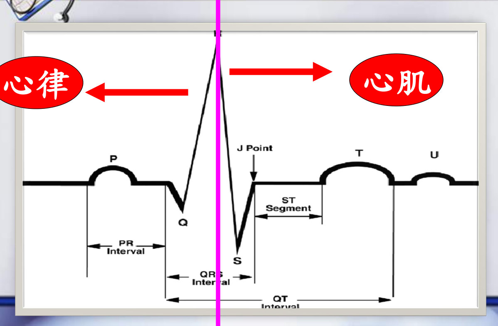
講師提示｜詳細說明與公版核對
原圖為心電圖波形結構圖；真正STEMI判讀須依性別、年齡、導程與臨床情境使用相應診斷門檻。
心電圖正常，不代表排除ACS
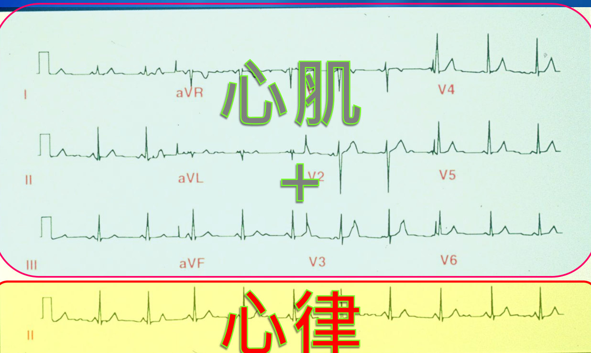
講師提示｜詳細說明與公版核對
這張是公版正常ECG影像，不是本課病例的原始檢查。
前壁缺血：辨識相鄰導程
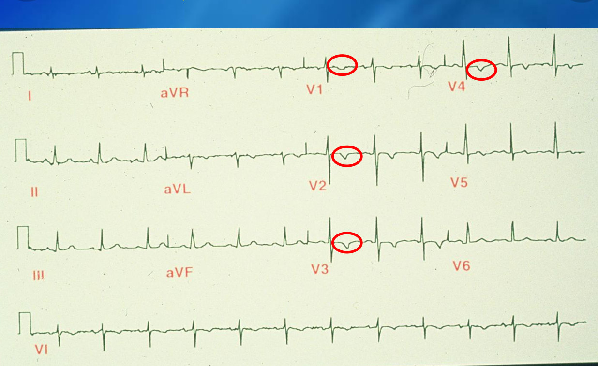
講師提示｜詳細說明與公版核對
原公版標示為前壁與中隔缺氧；此為教學原圖，影像解析度有限，不宜當作完整12導程正式診斷。
下壁ST上升：下一步別漏掉
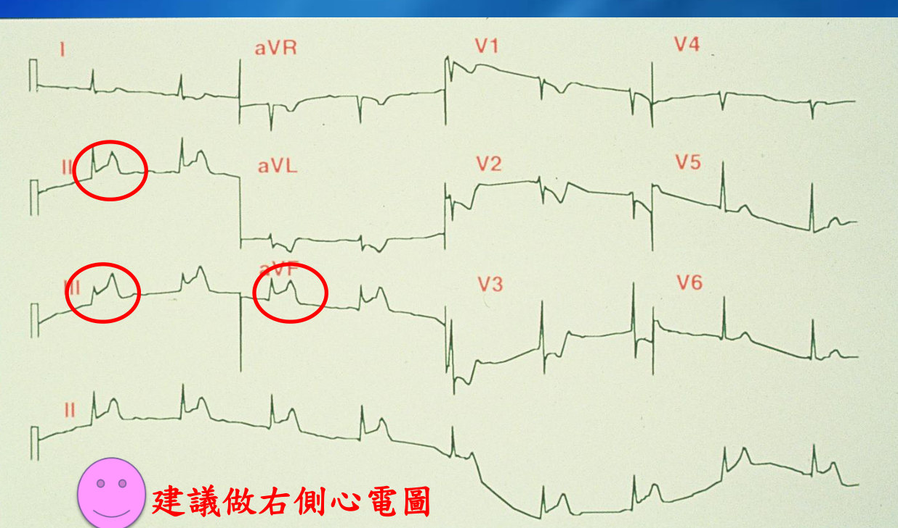
講師提示｜詳細說明與公版核對
公版第22頁強調右側心電圖。提醒：硝酸鹽禁忌與血流動力學狀態、PDE5抑制劑使用等相關。
STEMI不能等Troponin才啟動
講師提示｜詳細說明與公版核對
2025 ACS建議快速ECG與啟動系統流程。
高敏感度Troponin怎麼用？
講師提示｜詳細說明與公版核對
原公版第24頁以傳統Troponin 3–6小時上升作概括，不適用所有現代高敏感度檢驗。
初始治療：不要再背成MONA全給
講師提示｜詳細說明與公版核對
原公版第26–30頁逐項列MONA；現行指引不建議對血氧正常患者常規給氧，Morphine也不是每人固定使用。
Aspirin與抗血小板治療
講師提示｜詳細說明與公版核對
藥物、負荷劑量及雙抗血小板療程依指引、介入策略與院內流程決定；本課重點是作用機轉與分流。
氧氣、NTG、Morphine：何時不要給？
講師提示｜詳細說明與公版核對
同時注意PDE5抑制劑近期使用、休克、呼吸抑制與藥物交互作用。
STEMI的終點不是「給藥」
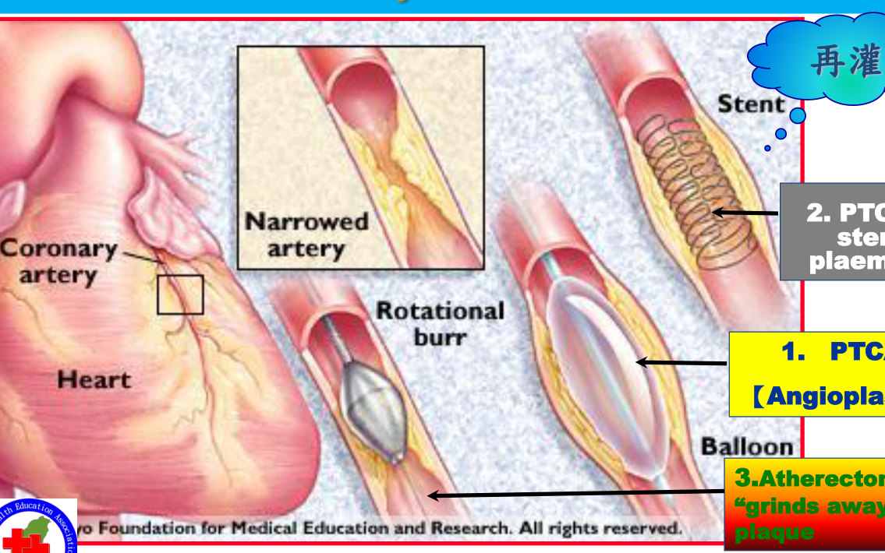
講師提示｜詳細說明與公版核對
公版第33–38頁強調door-to-balloon 90分鐘；現代系統重視首次醫療接觸到裝置時間、轉送與整體再灌流延遲。
NSTEMI不是「比較輕」
講師提示｜詳細說明與公版核對
NSTEMI可有高度危險的冠狀動脈病變；不以是否ST上升直接當作嚴重度排序。
病例回顧：這位病人要走哪條路？
講師提示｜詳細說明與公版核對
請學員說出三件事：立即啟動心導管、加做右側導程、慎用硝酸鹽。
STEMI診斷：不能只看「1 mm」
講師提示｜詳細說明與公版核對
原公版第16、34頁將新LBBB等同STEMI；現行作法需合併臨床及Sgarbossa等標準。
右室與後壁：補充導程如何救回診斷
講師提示｜詳細說明與公版核對
補充導程能提高辨識率，右室梗塞低血壓時避免不當使用血管擴張劑。
抗凝血與P2Y12：再灌流前後怎麼想？
講師提示｜詳細說明與公版核對
避免將藥物名稱與固定劑量當成所有病人共通處方；依院內ACS protocol。
纖溶治療：哪些病人不能直接給？
講師提示｜詳細說明與公版核對
此頁不是完整禁忌症核對表；實際用藥必須使用最新版院內checklist。
ACS出院後：為何急性處置不是終點？
講師提示｜詳細說明與公版核對
急性再灌流只是起點，需避免再梗塞及改善長期預後。
ACS完整臨床流程
講師提示｜詳細說明與公版核對
最後一次用完整流程串接，強調臨床決策與跨團隊溝通。
病例：醒來右側無力、講話不清
講師提示｜詳細說明與公版核對
Last Known Well不是被發現時間；對醒後中風要記錄最後正常時間與發現症狀時間。
腦中風的兩條路完全不同
講師提示｜詳細說明與公版核對
不能只看症狀決定給血栓溶解劑。
BE-FAST：到院前就要啟動
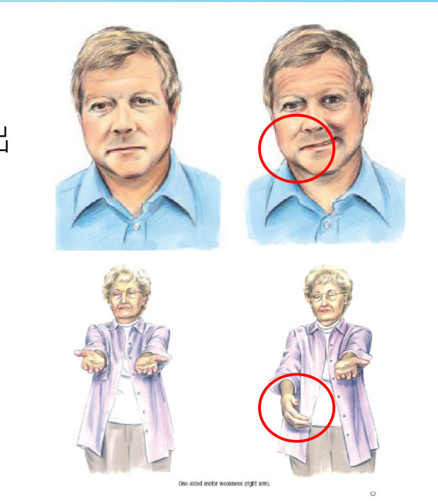
講師提示｜詳細說明與公版核對
原公版以CPSS與FAST為主；BE-FAST有助補足後循環症狀，但不取代專業評估。
8Ds不是口訣，是團隊接力
講師提示｜詳細說明與公版核對
每個環節都要縮短延遲；現場通報、影像室、急診與神經介入團隊要事先協作。
到院先做什麼？
講師提示｜詳細說明與公版核對
原公版第12–13頁將10分鐘與20分鐘目標列為流程口訣；實務以快速並行作業為主。
NIHSS：量化神經缺損
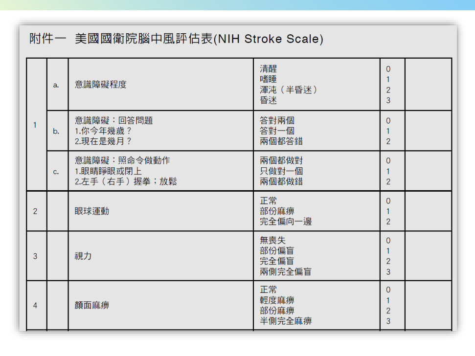
講師提示｜詳細說明與公版核對
原公版第14頁將rTPA治療與NIHSS 6–25連結過度簡化。2026指引強調具失能性缺損不應單憑NIHSS低分排除IVT。
CT的第一個問題：有沒有血？
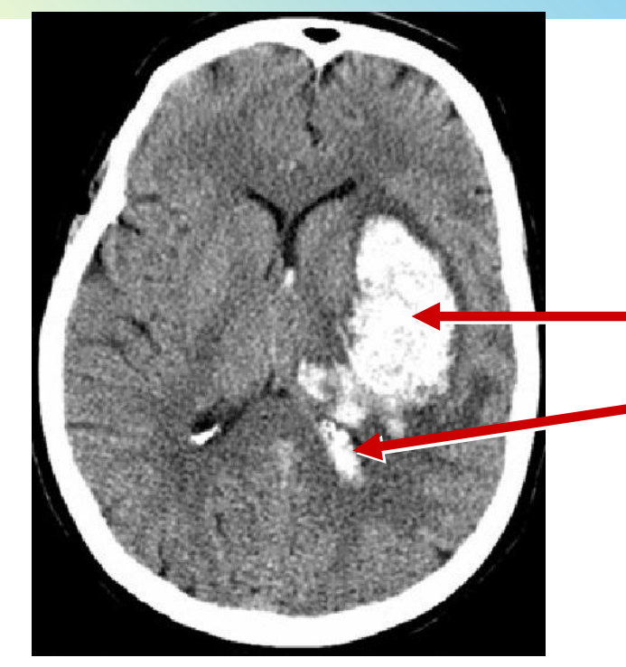
講師提示｜詳細說明與公版核對
這是公版第24頁的實際教學CT影像，不是新生成影像。注意窗位、切面與臨床判讀。
缺血性中風的早期CT徵象
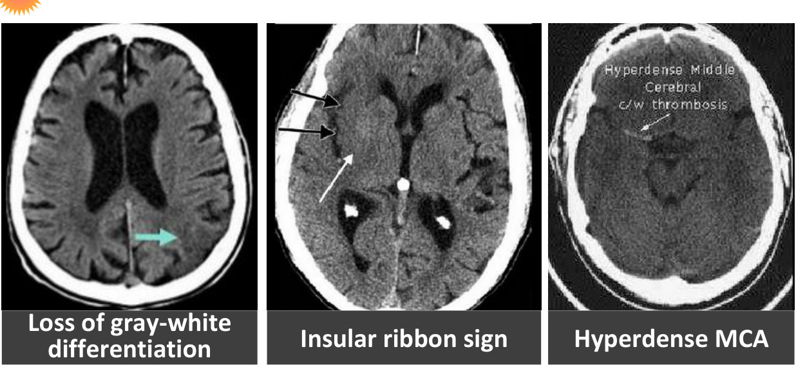
講師提示｜詳細說明與公版核對
原公版第20頁呈現三種早期徵象。這些影像不等於單獨診斷，也不可只依低密度判定精確發病時間。
低密度影像不等於「一定超過3小時」
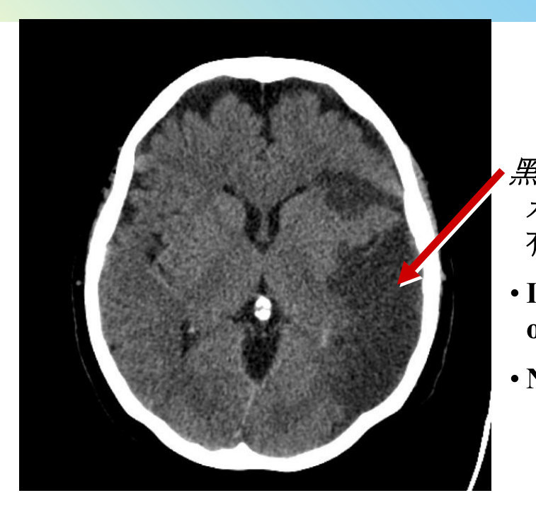
講師提示｜詳細說明與公版核對
公版第22頁寫「低密度表示>3小時、No fibrinolytics」過度絕對；此處明確更正。
CTA要回答哪個問題？
講師提示｜詳細說明與公版核對
CT與CTA依院內中風流程同步或序列安排；符合IVT條件者不因等待多模態影像而無故延誤。
ASPECTS：影像評估不是二分法
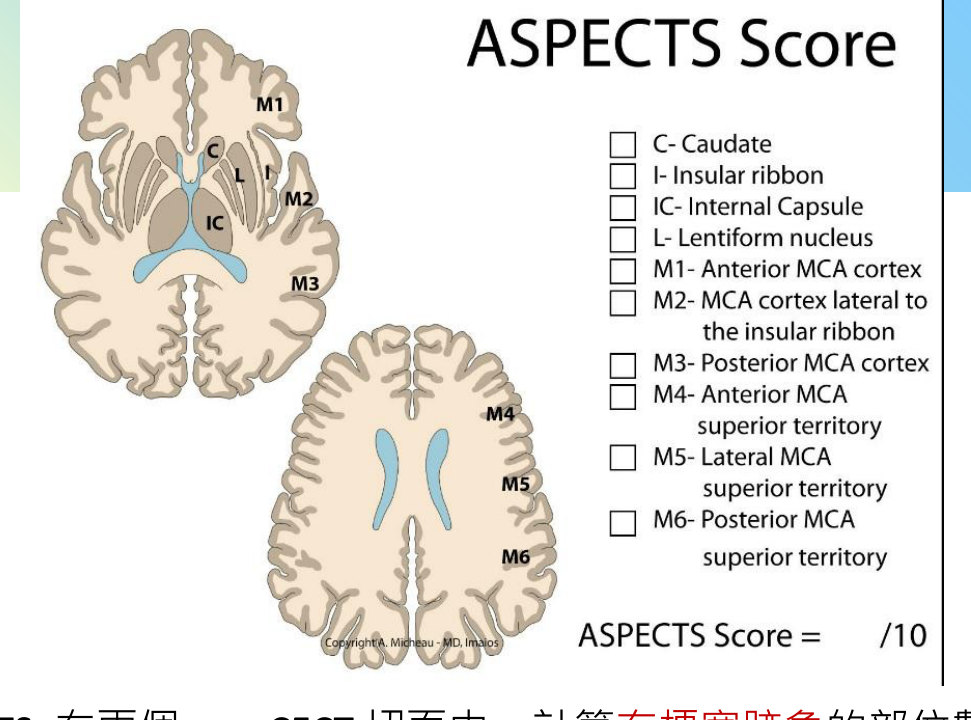
講師提示｜詳細說明與公版核對
公版第29頁示範ASPECTS計分；2026指引對特定大範圍梗塞族群的EVT適應症已有擴展。
IVT：4.5小時內可選擇的藥物
講師提示｜詳細說明與公版核對
2026 AHA/ASA支持4.5小時內兩種藥物。Tenecteplase 0.4 mg/kg不建議；使用須核對本地核准與院內政策。
醒後中風：超過4.5小時就沒機會？
講師提示｜詳細說明與公版核對
2026指引針對具可救回缺血半暗帶等條件的病人提供選擇性建議；由中風團隊依影像與禁忌症評估。
IVT前的血壓門檻
講師提示｜詳細說明與公版核對
原公版第33–35頁也列此門檻；降壓藥物劑量需依院內標準與病人狀況。
血栓移除術：把阻塞真正取出
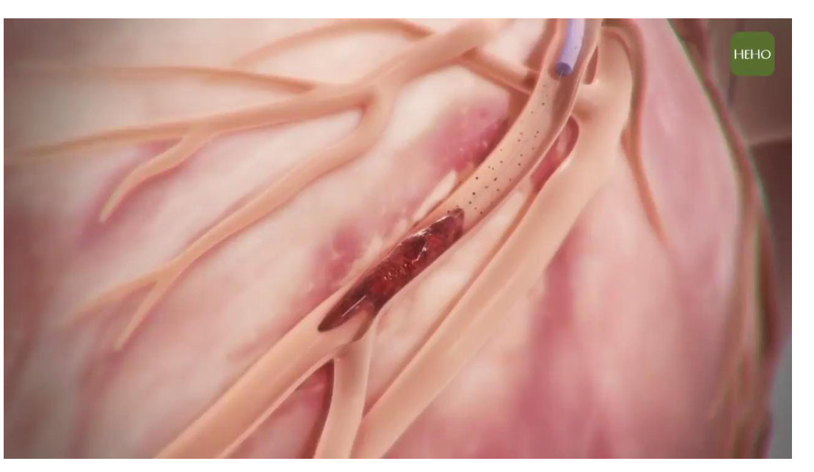
講師提示｜詳細說明與公版核對
公版第30頁有血栓移除示意。2026指引強調兩種再灌流方式的互補。
EVT不是只限6小時、ASPECTS≥6
講師提示｜詳細說明與公版核對
時間窗與ASPECTS不是單獨的決策條件，仍需考量年齡、功能、NIHSS、影像及腫脹等。
出血性中風：走另一條路
講師提示｜詳細說明與公版核對
不可對出血性中風使用IVT。不同出血型態處置不同，應依出血性中風專門指引。
IVT後24小時要守住什麼？
講師提示｜詳細說明與公版核對
原公版第26頁的核心監測概念可保留，細節應依藥物、指引與院內流程執行。
吞嚥、血糖、體溫：不是次要事項
講師提示｜詳細說明與公版核對
原公版第32頁提及血糖、體溫與吞嚥；2026指引也強調支持性照護品質。
病例回顧：醒後中風怎麼走？
講師提示｜詳細說明與公版核對
請學員回答：不能把07:00當成LKW；不能僅因超過4.5小時就不做大血管阻塞評估。
中風模仿者：血糖正常就夠了嗎？
講師提示｜詳細說明與公版核對
不能以年輕或症狀不典型就排除中風。
IVT安全核對：不是只看4.5小時
講師提示｜詳細說明與公版核對
公版p16–18有2025台灣檢核表，但不能直接當成所有患者通用的唯一禁忌清單；以現行院內表單為準。
血壓管理：IVT與未IVT不同
講師提示｜詳細說明與公版核對
公版將缺血與出血性中風血壓目標併列；實際目標需依出血類型與治療策略。
ASPECTS與EVT：不只一個數字
講師提示｜詳細說明與公版核對
強調「選擇性」適應症，避免錯誤概括。
後循環中風：別漏掉基底動脈阻塞
講師提示｜詳細說明與公版核對
後循環處置不能照搬前循環ASPECTS或臨床門檻。
Stroke完整處置流程
講師提示｜詳細說明與公版核對
回到完整流程，強調團隊合作與避免可預防的延遲。
ACS｜三個臨床決策不能錯
講師提示｜詳細說明與公版核對
請學員依次說出下一步，避免只背藥物。
Stroke｜三個臨床決策不能錯
講師提示｜詳細說明與公版核對
請學員指出每個步驟最常見的延誤。
最後提問｜回到臨床
講師提示｜詳細說明與公版核對
最後十分鐘可依學員回答展開討論。
參考來源與更新說明
講師提示｜詳細說明與公版核對
原始PDF保留作為教學影像來源。新增的2025 ZIP同名教材與已上傳版本頁數相同，已核對章節內容。